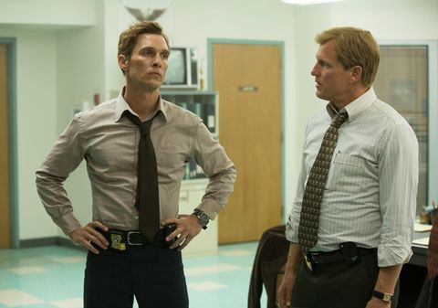

TV Reviews
I want to review some things I have a strong opinion on.
Game of Thrones

10/10
This is easily one of the greatest shows of all time. Game of Thrones does things that other shows simply can't do. I can't even talk about it without spoiling it so go watch it before finishing reading this because spoilers ahead in the next paragraph. There are so many pictures I could have chosen and I went with this image because it shows two separate characters with two separate storylines. People may complain about how the series ended, but the tv show passed the books because the show took on a life of it's own. Spoilers ahead.
Game of Thrones Click for Spoiler This is unparalleled and actually works beautifully. It's like Harry potter in that you get to grow up with the character. Each Stark boy gets a direwolf puppy and they grow up with them, for example. The Battle of the Bastards has so much buildup and is such a masterpiece it's unbelievable. It is the pinnacle of entertainment to be watching that for the first time while engrossed in the series.
True Detective: Season 1
10/10
"Death created Time to grow the things that it would kill." - Rustin Cohle
This is one of the best seasons of television ever. Matthew Mcconaughey and Woody Harrelson are both brilliant and the writing and directing are spectacular.